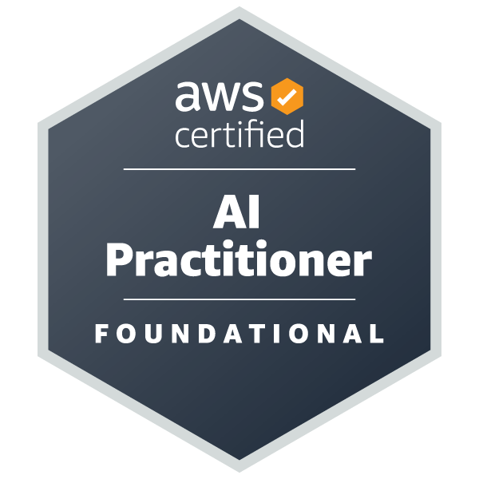

Texas A&M University
Graduate Research Assistant - Data Science and AI/ML
Improved retrieval precision by 25%, reduced hallucination by 35%, and standardized ML experimentation workflows.
AI Engineer and Senior Data Scientist
I bring strong expertise in Artificial Intelligence and Machine Learning with specialization in Generative AI, large language models, and production-ready AI systems for real-world impact.
About
My work spans LLM applications, retrieval-augmented systems, traditional machine learning, and end-to-end deployment. I collaborate with technical and business stakeholders to ship AI solutions that improve speed, quality, and decision-making.
I focus on practical innovation: measurable outcomes, transparent experimentation, and responsible AI engineering that teams can maintain and scale.
Work Experience
Graduate Research Assistant - Data Science and AI/ML
Improved retrieval precision by 25%, reduced hallucination by 35%, and standardized ML experimentation workflows.
Software Development Engineer - AI/ML
Built enterprise GenAI microservices with 99.5-99.9% uptime, sub-second median latency, and 60% faster internal search.
Data Scientist - ML and AI Engineering
Delivered end-to-end ML systems with 10-18% gains over rule baselines and improved pipeline scalability by 3-5x.
Projects
LangChain + FAISS/Chroma + Azure OpenAI stack improving top-3 retrieval relevance by around 30%.
Multi-turn AI agent architecture with tool-calling and orchestration for support automation.
Supervised ML pipeline using imbalance handling that achieved 20-30% recall lift.
MLflow + CI/CD + containerized APIs reducing deployment cycle from weeks to days.
Research and Recognition
Education
M.S. in Computer Science
B.E. in Computer Engineering
Certifications

Industry certification validating foundational AI/ML knowledge and practical cloud AI understanding.
Verify on CredlyContact
Let us connect for AI/ML roles, research opportunities, and impactful product collaborations.